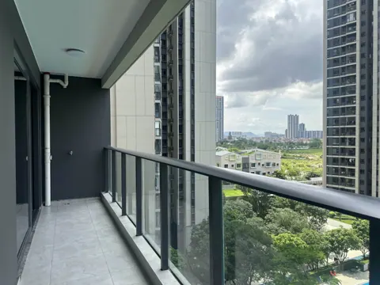
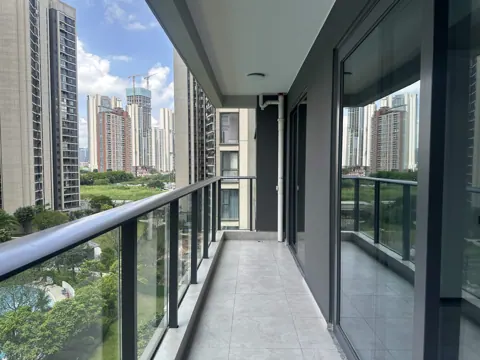
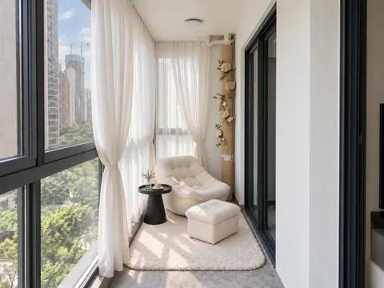
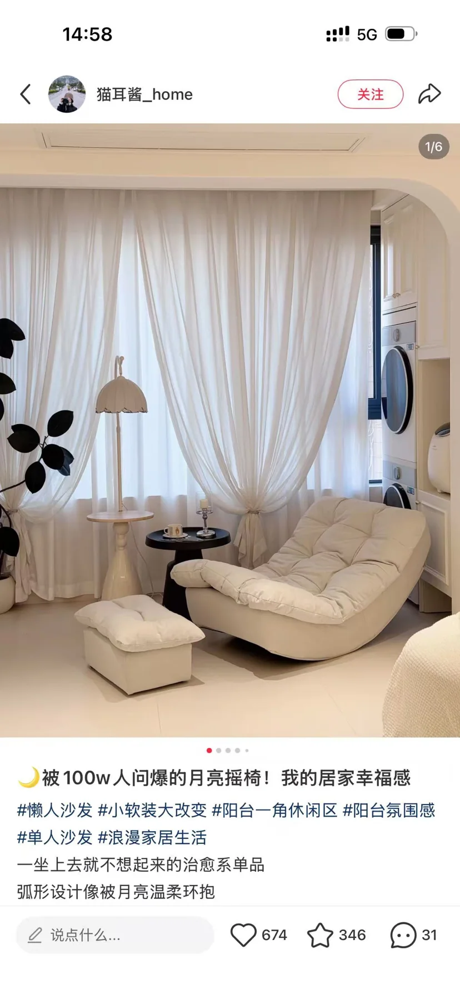
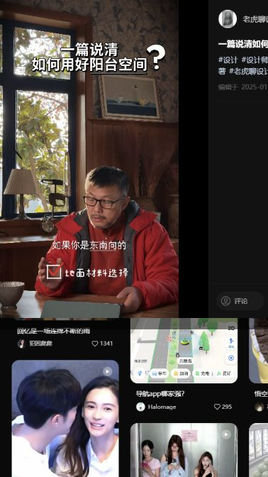
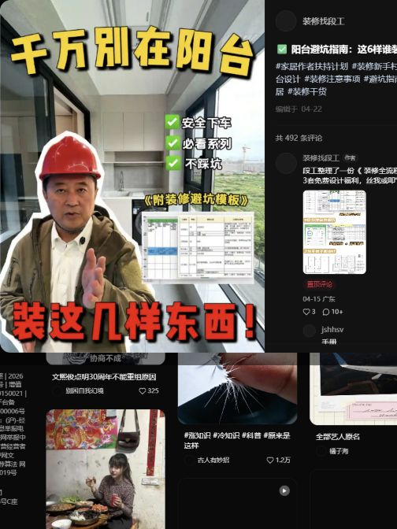
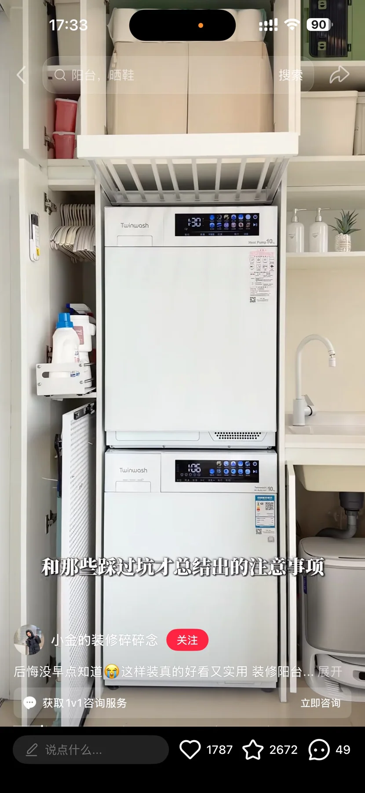
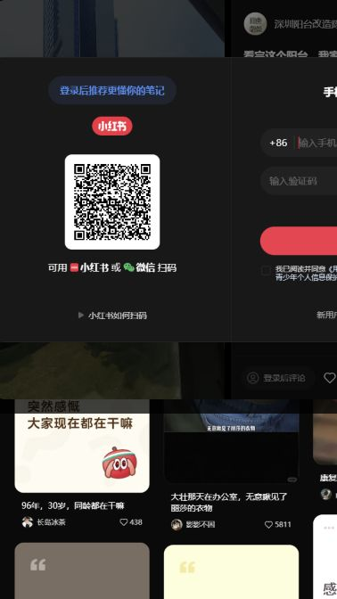
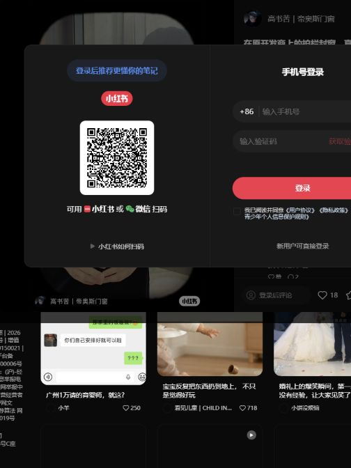

SPACE 03
03 大阳台
现状、需求与预期效果，放在一起讨论。
03 大阳台装修需求
所有尺寸均为参考；施工、定制、开孔和下单以现场实测、实物安装要求及确认图纸为准。列入配置不等于已经购买。
现场实拍


东侧阳台（客厅侧）


西侧阳台（衣帽间侧）
DESIGN INTENT
预期效果
仅展示需求文档中列出的效果图。
AI 照片级效果以 3ds Max 的空间与家具布局为依据，灯光、织物与小摆件用于氛围示意；实物配置以本页需求及设备清单为准。

大阳台东侧家政柜


大阳台西侧休闲区
功能与布局
- 风格定位：现代简约黑白灰，与客餐厅及主次卧协调；已选奶油白休闲软包作为浅色点缀。
- 东侧：洗烘套装、扫地机器人及台盆收纳家政柜，保留设备进出和检修空间。
- 西侧：奶油色月亮椅及同款脚凳休闲区；椅子采用紧凑尺寸，斜放约 30° 朝向衣帽间门洞。靠窗一侧放白色圆形小茶几，沙发与脚凳下铺白色羊毛地毯。排水管包尼龙与隔音棉，外绕麻绳、点缀永生花，检修口可拆达。
- 钢琴及琴凳放在主卧床尾，不纳入阳台布置。
- 西侧沿窗设置参考图式落地白纱帘，柔软褶皱、可低位束起；纱帘与窗户伸缩纱网为不同构件，分别设置。
- 东西之间：L 型落地帘软隔断（根据现场情况决定）。
硬装与定制
- 实施范围与柜体原则：装修公司负责封窗、通铺、移门拆除改拱形门洞、墙面涂白、窗帘轨道、下水管包管及东侧家政柜。家政柜落地自承重、不做挂墙柜；软装由业主自购。拱形门洞在保留原墙垛及结构构件的前提下深化，拆除位置、门框与收口现场确认。
- 地面与墙面：与客厅瓷砖平接通铺，复核基层、找平及完成面高度；通铺图标明重做防水层，涉及防水做 48 小时闭水试验，保留排水坡度及地漏功能。墙面统一喷涂白色，基层及防潮耐候体系由装修公司深化。
- 东侧家政柜：落地自承重；右侧叠放洗烘套装，顶部收纳上柜。左侧台盆下设双开门，柜门遮住机器人基站，仅底部保留约 160 mm 进出口，最终按设备通行及传感器要求核定。台盆上方为无门开放格，格下设毛巾晾晒挂架。柜背包管留可拆检修口。
- 东侧清洗与设备维护：清洗区配置台盆和抽拉龙头；机器人停靠区保留进出及整机拉出维护空间。下水管隔音包覆后设置可拆检修板，阀门、插座和上下水接口保持可达，不被柜体封死。
- 东侧尺寸与间隙：实测宽 1200 mm，模型柜体外宽约 1316 mm，须按实测净宽、包管与设备净空深化；洗烘设备宽约 600 mm、机器人基站宽约 453 mm，不缩小设备尺寸，不设置额外竖向抽拉柜。
- 西侧桌柜与收纳：配置懒人沙发和脚垫，不设置定制桌柜。
- 西侧收口与使用空间：家具避让衣帽间移门、门轨与管道检修，保留通行空间。
- 西侧照明与检修：下水管包尼龙和隔音棉、外绕麻绳并插永生花，包覆可拆，不遮蔽检修口和连接点。
- 门窗与天花配合：优先采用下部固定玻璃、上部推拉窗，配可卷动伸缩纱窗。安全、有效通风和易清洁优先，兼顾隔音隔热；提交开启面积、轨道清洁及排水做法，避让窗帘、晾衣架。按物业资料采用不低于 110 系列、壁厚 ≥2.0 mm 的国标铝材及不低于 5+20A+5 双层中空白玻，边框与原窗颜色完全一致，分格及防护方案报物业确认。移门拆除做拱形收口，保留墙垛和结构构件。
- 原栏杆与收口：按拆除原栏杆、设置经确认的替代防护方案深化报价，施工前取得物业确认。固定玻璃及连接结构明确防护性能；临时拆除同步设置防护，安装及密封不得破坏排水。
封窗选型笔记
物业报装需铺砖图及封窗 CAD 图（尺寸、颜色、材料、安装位置），并提供铝材、玻璃质检报告及施工资质、高空作业证件和保险等资料，详见全屋物业报装配合。
保留选型关注点：
- 安全、通风和清洁便利优先，兼顾隔音隔热；不采用占用空间的重型侧压方案或内开扇方案作为报价基线。
- 型材系列及壁厚与楼层条件匹配、隔热条材质、玻璃系统、五金与密封条、高空安装安排。
- 型材及玻璃不得低于上述物业资料要求；产品性能、有效通风面积及轨道清洁方式按选定方案核对。
- 材料验收方法及施工责任约定与门窗单位确认。
家具与设备
“否”按成品选购；“待确认”不代表已决定定制。尺寸以现场实测及最终确认图纸为准。
商品图、规格图及购买链接均为选型参考，不限定购买渠道或最终款式。若有同款且性价比更高的选择、风格更合适的家具，或因现场尺寸、安装条件等客观原因需要调整，可提出替代方案，说明差异及更换原因，经业主确认同意后方可更换。
| 项目 | 数量 | 是否定制 | 参考尺寸 / 选型要求 | 商品图 / 规格参考 | 购买链接（参考） | 备注 |
|---|---|---|---|---|---|---|
| 东侧家政柜 | 1 套 | 是 | 左侧台盆、开放格、毛巾挂架及隐藏机器人基站柜；右侧洗烘叠放，顶部收纳 | 模型示意 | 待定制 | 实测 1200 mm，模型约 1316 mm，复尺深化并保留包管检修 |
| 台盆及抽拉龙头 | 1 套 | 是 | 盆体及抽拉龙头选型待确认 | 示意 | 待选 | 配东侧家政柜，盆沿与台面齐平；盆底、存水弯及机器人上方空间共同确认 |
| 隐藏抽拉抹布晾衣架 | 1 组 | 是 | 规格按柜体核对 | 示意 | 待选 | 安装于左侧开放格下方、台盆上方，前向抽拉挂毛巾；行程按五金选型确认，不与电动晾衣架重复计数 | | 家政工具: 升降拉篮、折叠洗衣篓 | 若干 | 否 | 升降拉篮图示下降行程 700 mm，上 / 下篮深 280 / 195 mm；脏衣篮规格按柜体确认 | 洗衣篓-实拍；升降拉篮实拍、升降拉篮规格 | 淘宝-升降拉篮；淘宝-洗衣篓 | 按定制柜体配置并核对安装与下降空间 | | 自动上下水扫地机器人及基站 | 1 套 | 否 | 大疆 DJI ROMO P2 自动上下水参考款；基站长 425 × 宽 453 × 高 440 mm，机器人高 98 mm；图示功率 1100 W | 实拍、规格 | 大疆商城 | 考虑购买明年的新款，接口及安装空间按最终型号确认 | | 洗烘套装 | 1 套 | 否 | 叠放参考宽 600 × 深 570 × 高 1922 mm；图示整体深度 595 mm、开门深度 1087 mm；建议预留宽 630 × 深 600 × 高 1942 mm（含突出部分深 625 mm） | 实拍、规格 | 淘宝 | 大阳台东侧立式叠放一套；品牌、型号按实物确认；洗衣机与烘干机各一条排水管，烘干机管径较小；安装尺寸按最终设备核对 | | 西侧白色圆形小茶几 | 1 张 | 否 | 圆形托盘桌面、收腰底座；模型暂直径 380、高约 450 mm | 造型参考 | 待选 | 参考图造型、通体白色，放月亮椅靠窗侧，不挡移门与通道 | | 西侧白色羊毛地毯 | 1 张 | 否 | 白色、柔软羊毛质感；模型暂 1600 × 1240 mm | 待选 | 待选 | 覆盖月亮椅及脚凳休闲区，边缘避让移门轨道 | | 西侧懒人沙发及脚垫 | 1 套 | 否 | 奶油色月亮椅、厚软拉扣坐垫及同款脚凳，采用紧凑尺寸；实际尺寸待选型及现场复尺 | 参考 | 待选 | 斜转约 30° 朝向衣帽间门洞，保留移门与检修通道 | | 备用晾衣架 | 2 套 | 否 | 参考型号 H21S-ZL，白色、带灯；主机长 978 × 宽 320 mm，整体宽 465 mm、厚 95 mm；杆长 1207～2007 mm；图示开孔 1400 × 560 × 120 mm，动态承重 35 kg | 实拍、规格 | 淘宝 | 东西侧各一套，按需升降晾衣；原灯保留不拆不改，自带灯仅作补充；品牌及最终选型待确认，开孔按所选安装说明核对 | | L 型窗帘 | 2 套 | 否 | 西侧白色轻透落地纱帘，沿窗 L 型布置并可束起；东西分区帘可分体，满足“只隔断不隔景” | 窗帘示意、吊柜折叠门示意 | 待确认 | 不选百叶帘。东西侧各一套；西侧参考月亮椅照片的纱帘，轨道避让晾衣架、封窗纱盒和包管；东侧用于分区软隔断 |


水电
用电设备
- 东西侧各一套带灯电动晾衣架，每套只计一份设备供电；原有灯具、灯位和控制不拆不改，自带灯不替代原灯。电动窗帘另列。
- 隔断帘是否电动尚未确定，不与窗帘电机重复计算。
- 现状无电位，需结合现场水电图补充。
- 洗衣机、烘干机与机器人基站分别供电，插拔及检修可达。
- 洗烘、台盆与机器人给排水由安装方核对，烘干机附加进水按型号确认。
插座、用电设备和开关统一列在下表；同一设备的供电只计一次。用电设备采用插座还是直接接线随最终选型确定，安装高度写在位置要求中；开关按面板位置计数，不按按键数计。数量包含暂定项，现有可复用位置现场核对。
| 类别 | 设备 / 用途 | 数量 | 位置 / 要求 | 状态 |
|---|---|---|---|---|
| 插座 | 东侧 · 洗衣机 | 1 个 | 独立供电，可检修 | 配置 |
| 插座 | 东侧 · 烘干机 | 1 个 | 独立供电，可检修 | 配置 |
| 插座 | 东侧 · 扫地机器人基站 | 1 个 | 按无线连接考虑 | 配置 |
| 插座 | 西侧 · 充电 | 1 个 | 手机等设备充电 | 暂定 |
| 用电设备 | 大阳台东侧 · 电动窗帘 | 1 套 | 按东侧一个电动帘开口；确认轨道长度、驱动侧及晾衣架位置 | 暂定 |
| 用电设备 | 大阳台东侧 · 电动晾衣架及自带照明 | 1 套 | 东侧晾衣架与自带照明共用一份新增设备供电；原灯供电保留 | 配置，接口待核 |
| 用电设备 | 大阳台西侧 · 电动窗帘 | 1 套 | 暂按西侧一个电动帘开口；轨道及电机侧与晾衣架共同定位 | 暂定 |
| 用电设备 | 大阳台西侧 · 电动晾衣架及自带照明 | 1 套 | 与休闲家具及帘轨避让；自带照明不另计电源 | 配置，接口待核 |
| 用电设备 | 大阳台东、西侧原有照明 | 2 组 | 原灯不拆不改，保留原供电及控制；暂按东、西侧各一组既有供电登记，不计新增灯位 | 现有保留，分组现场核对 |
| 开关 | 大阳台 · 照明开关 | 2 处 | 原有控制位置保留，晾衣架控制按设备配置 | 数量已由业主确认 |
汇总：插座 4 个，另需供电的设备 6 项（含原有照明 2 组，不是新增施工量），照明开关 2 处。 用电设备后续即使采用插座供电，也不再重复增加同一项需求。
西侧保留 1 个充电使用位；手动伸缩纱窗、拉篮及抽拉抹布架不计供电。
用水设备
按设备端需求记录，上水按用水设备 / 用水位计，下水按排水接入计；冷热水同时需要时仍为一个用水位，但施工须分别记录冷、热水接口。数量包含现有可复用接口，不直接等于新增管口；共用支路不省略设备需求。
| 设备 / 用途 | 上水需求 | 下水需求 | 位置 / 说明 |
|---|---|---|---|
| 洗衣机 | 1 处；按型号要求 | 1 处 | 东侧叠放，接口可检修 |
| 烘干机 | 待型号确认，暂不计数量 | 1 处 | 排水接入独立记录 |
| 台盆及抽拉龙头 | 1 处；冷 / 热水配置待确认 | 1 处 | 盆体、龙头及柜内接口共同定位 |
| 自动上下水扫地机器人基站 | 1 处；按基站要求 | 1 处 | 阀门及管线保留检修空间 |
当前计入：上水 3 处，下水 4 处，含表内暂定项。 待型号确认的附加接口暂未计入，不代表不需要。地漏、雨水、空调冷凝水及其他附加排水另行现场盘点；管径、阀门和支路按最终设备与现场条件确定。
待确认事项
| 区域 / 专项 | 待确认内容 | 对设计及报价的影响 |
|---|---|---|
| 原阳台栏杆 | 拆除审批、临时防护与替代防护结构 | 按物业确认图施工，明确安全及防水责任 |
| 东侧柜体与设备 | 实测 1200 mm 与布局模型约 1316 mm 宽度差异、包管检修、设备净空、托盘承重及软管随动 | 按实测深化柜体分格及五金；不缩小设备尺寸 |
| 窗帘轨道、天花 | 落地帘是否电动、天花是否需要隐藏带灯晾衣 | 轨道、天花和电源 |
灵感与风格参考

阳台休闲区

一篇说清如何用好阳台空间

阳台避坑指南


家政柜抽拉晾晒架

一模一样阳台家政柜
